Znaczenie cierpienia
Co oznacza cierpienie
Dzikie zwierzęta
Nie da się zaprzeczyć, że natura życia jest brutalna. Istnieje wiele sposobów, w jakie dzikie zwierzęta doświadczają ogromnego cierpienia:
Najpierw spróbujmy ustalić, czym w ogóle jest cierpienie. Cierpienie różni się od bólu. Cierpienie to nieprzyjemne doświadczenie, którego aktywnie pragniesz uniknąć. Ból natomiast ma charakter wyłącznie fizyczny. Na przykład, jeśli ludzie czerpią przyjemność z bólu związanego z robieniem tatuażu lub jeśli chodzą na siłownię i znoszą ból, nie jest to cierpienie, lecz ból prowadzący do subiektywnego, większego dobra. Każdy cierpi, ale niektórzy cierpią bardziej niż inni. Większość z was, którzy to czytacie, znajduje się oczywiście w niezwykle uprzywilejowanej sytuacji. Jednak 99,99 procent czujących istot musi przechodzić przez ekstremalne cierpienie i to właśnie na tym skupia się głównie ruch na rzecz sprawiedliwości społecznej opowiadający się za wyginięciem. Ekstremalne cierpienie doświadczane przez ogromną większość wszystkich jednostek.
Na tej stronie szczegółowo przedstawimy różne formy tego ekstremalnego cierpienia.
Zacznijmy od największej grupy ofiar:
dzikie zwierzęta, cierpią poprzez
[To, co tutaj przedstawiono, skupia się głównie na zwierzętach lądowych (w tym także ptakach i owadach), podczas gdy sama liczba zwierząt wodnych sięga co roku trylionów, co stanowi jeszcze większą, często pomijaną skalę. W sumie oznacza to, że wśród około dwudziestu kwintylionów dzikich zwierząt, ponad osiemdziesięciu miliardów hodowlanych zwierząt lądowych rocznie oraz ośmiu miliardów ludzi, cierpienie występuje na ogromną i niezaprzeczalną skalę.]
Emocjonalne cierpienie i umieranie
Cierpienie z powodu niechcianego stanu niezaspokojonych potrzeb jest integralną częścią doświadczenia. Czy zapobiegniesz cierpieniu od irytacji, konfliktu lub straty ukochanych bez spowodowania wyginięcia każdego życia? Im dłużej system konserwujący życia będzie istnieć, tym dłużej ten naturalny holokaust i genocyd będzie zmuszać ofiary do istnienia w niebezpiecznych warunkach. Środowiska przyrodnicze od zarania czasów życia czującego to wieczny stan wojenny.
Cierpienie z głodu
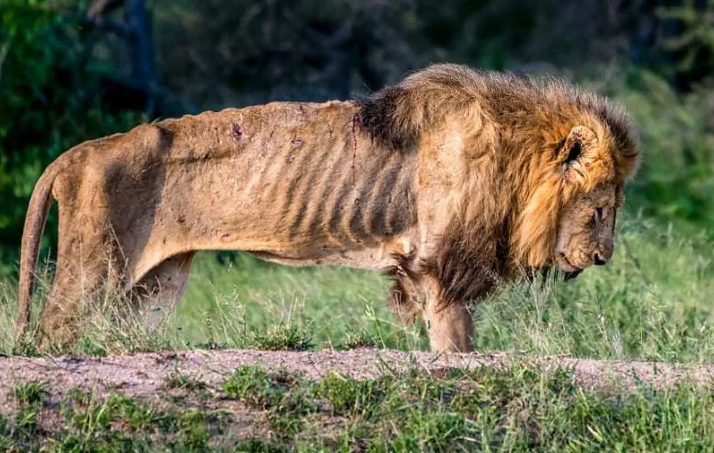
Głodują, ponieważ dostępność pożywienia jest nieprzewidywalna, a rywalizacja, obrażenia lub trudne warunki mogą uniemożliwić im zdobycie wystarczającej ilości pokarmu.
Drapieżnictwo i gwałt
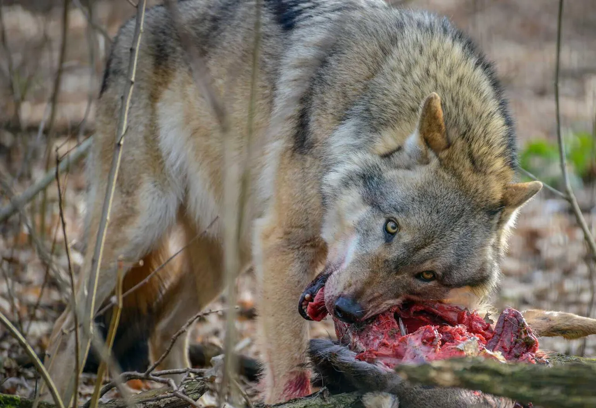
Powoduje ogromne cierpienie ofiar, ale jest nieuniknioną częścią procesu przetrwania zwierząt w środowisku naturalnym. Podstawowa struktura natury opiera się na cierpieniu.
Choroby i urazy
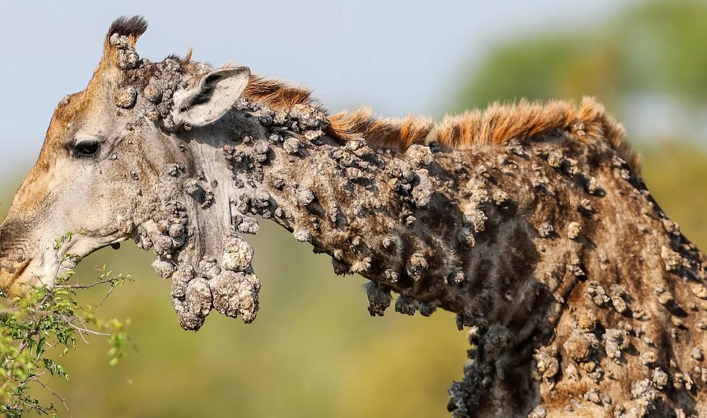
Dzikie zwierzęta cierpią z powodu chorób i urazów, ponieważ choroby, pasożyty, wypadki i presja środowiskowa stanowią naturalną część ekosystemów, a w przeciwieństwie do ludzi nie mają one dostępu do postępu naukowego czyli opieki zdrowotnej, która pozwoliłaby leczyć lub zapobiegać tym schorzeniom.
Trudne warunki środowiskowe
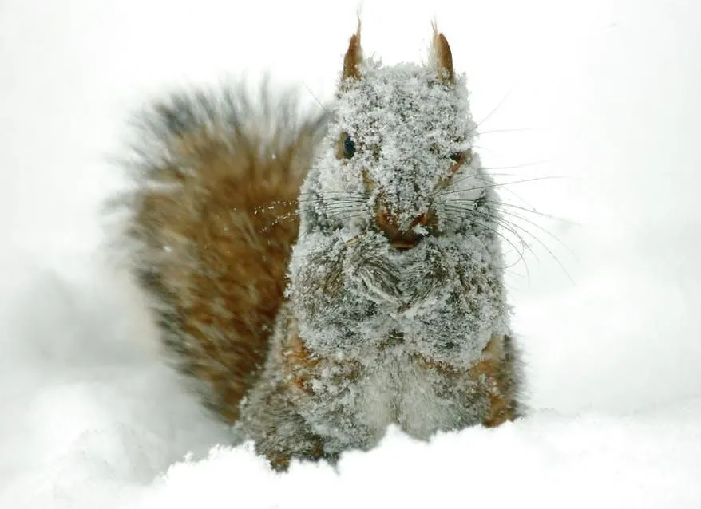
Trudne warunki pogodowe, takie jak ekstremalne mrozy, fale upałów, pożary lasów czy burze, mogą powodować, że zwierzęta zamarzają na śmierć, ulegają poparzeniom lub cierpią z powodu wychłodzenia, nie mając żadnego schronienia ani opieki.
Zwierzęta hodowlane
Zwierzęta zniewalane cierpią z powodu życia i wyzysku ze strony ludzi, poprzez
Przymusową hodowlę i oddzielanie potomstwa
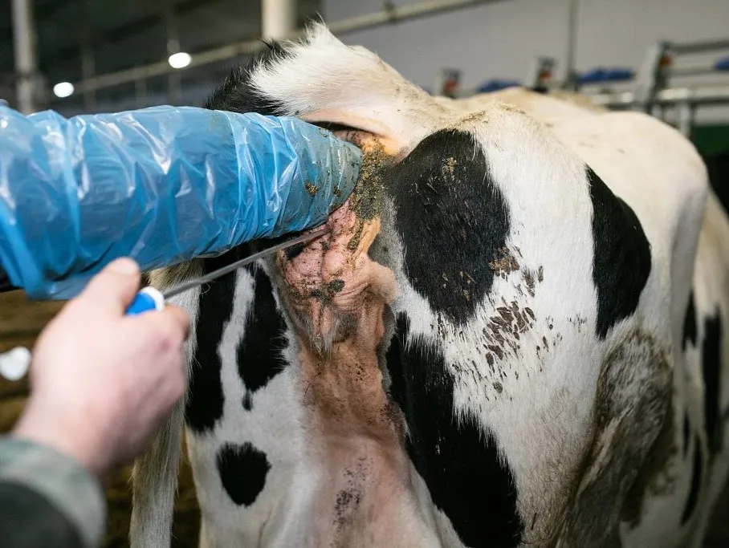
Zwierzęta są zapładniane poprzez przymusowe inseminacje (czyli zgwałcenia), a noworodki są odbierane matkom wkrótce po urodzeniu, co powoduje u nich ogromny stres i zachowania wskazujące na cierpienie.
Uwięzienie
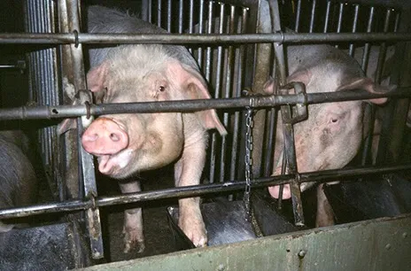
Istoty czujące są trzymane w ciasnych klatkach, boksach lub przepełnionych oborach, gdzie nie mogą się swobodnie obracać.
Okaleczania
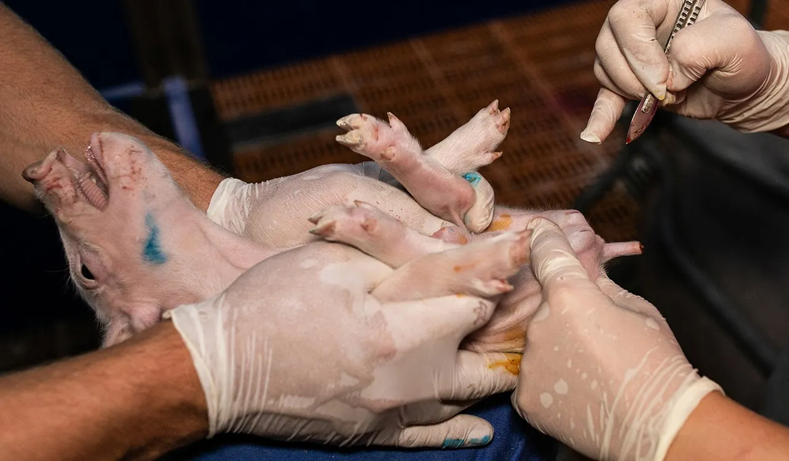
Przeprowadza się takie zabiegi jak kastracja, obcinanie ogonów, przycinanie dziobów i usuwanie rogów, często bez odpowiedniego znieczulenia.
Ciężkie warunki transportu
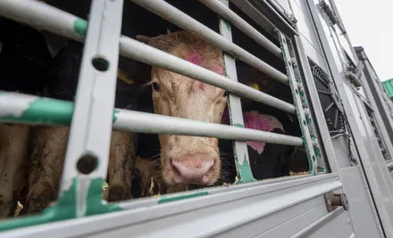
Ciasne upychanie ich w ciężarówkach i przewożenie przez wiele godzin lub dni, często bez wystarczającej ilości pożywienia, wody czy odpoczynku, co prowadzi do wyczerpania, obrażeń, a czasem nawet śmierci.
Mord
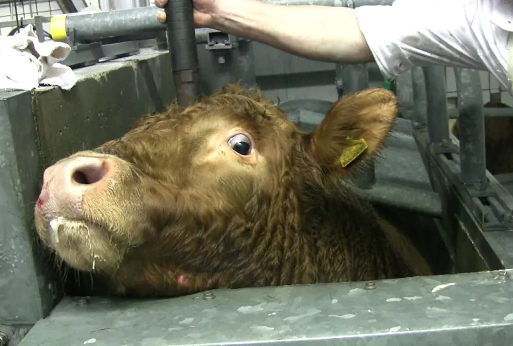
Zwierzęce dzieci są unieruchamiane, często niedostatecznie ogłuszane lub nie całkowicie pozbawiane przytomności, a następnie zabijane poprzez np. podcięcie gardła m.inn. na szybkich liniach produkcyjnych, co wywołuje u nich intensywny strach, panikę i cierpienie.
Ludzie
Ludzie stanowią najmniejszą i najbardziej uprzywilejowaną grupę cierpiących. Niemniej jednak istnieje wiele form skrajnego cierpienia, których doświadcza przynajmniej część z nich i o których warto wspomnieć, cierpienia poprzez
Przemoc seksualną
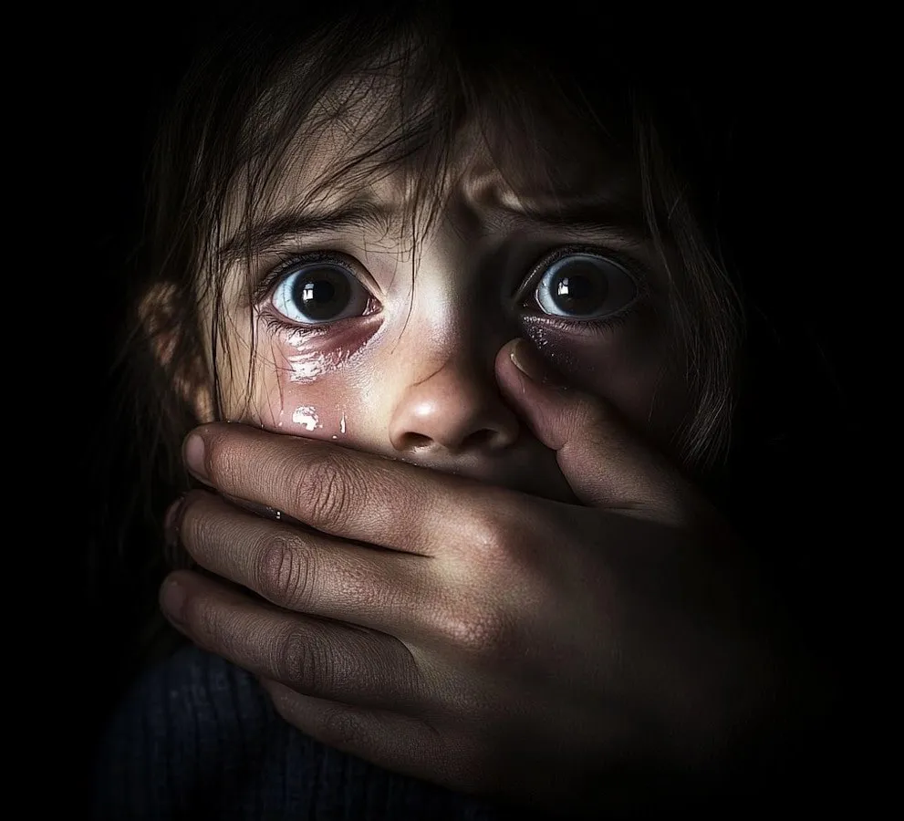
Także osoby człowiecze padają ofiarą napaści i wykorzystywania seksualnego, co często skutkuje poważną traumą psychiczną, strachem i długotrwałymi urazami emocjonalnymi. Szacunki wskazują, że każdego dnia ofiarą gwałtu wśród jedynie ludzi pada ponad 5000 dzieci.
Wojnę
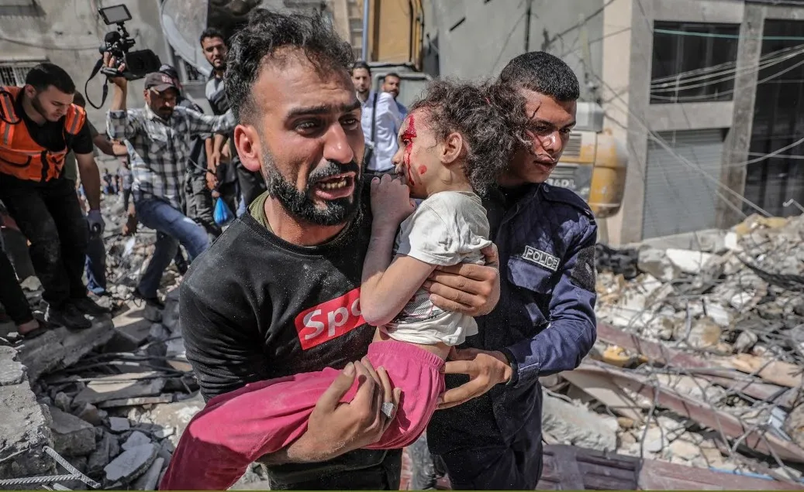
Rodziny są rozdzielane, gdy ludzie giną, odnoszą obrażenia lub są zmuszeni do ucieczki, a bliscy krzyczą, opłakują straty i zostają rozdzieleni, podczas gdy ocalali borykają się z ciągłym strachem, poczuciem straty i traumą.
Naturalne klęski żywiołowe
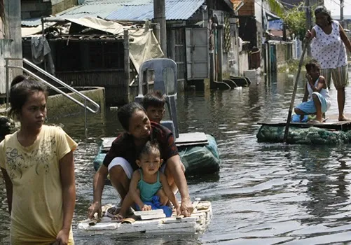
Osoby także ludzkie mogą zostać uwięzione, ranne lub zasypane żywcem, w ciągu kilku chwil tracą swoje domy i bliskich, a następnie pozostają w stanie szoku, strachu i rozpaczy, pozbawieni podstawowych środków niezbędnych do życia, takich jak schronienie, woda czy bezpieczeństwo.
Niedożywienie
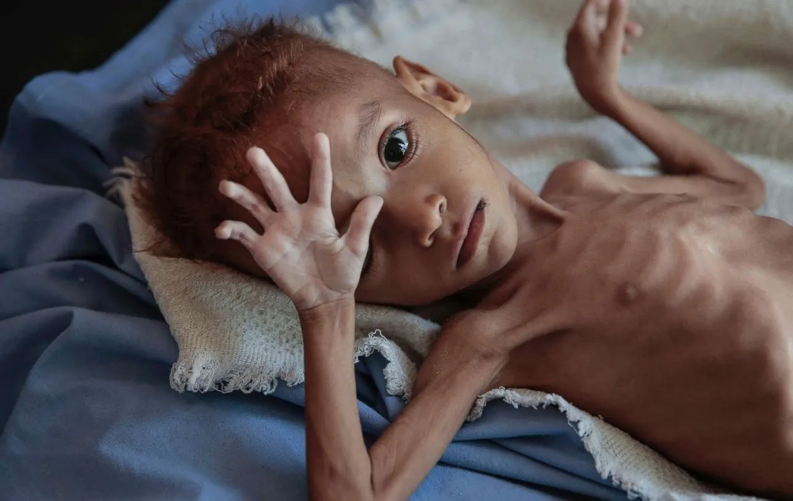
Nawet uprzywilejowani ludzie cierpią z powodu braku dostępu do odpowiedniego wyżywienia, co prowadzi do głodu, osłabienia i śmierci, podczas gdy inni borykają się z otyłością i chorobami z nią związanymi, spowodowanymi nieodpowiednią dietą; oba te zjawiska powodują poważne szkody fizyczne i psychiczne.
Choroby, schorzenia przewlekłe i cierpienie psychiczne
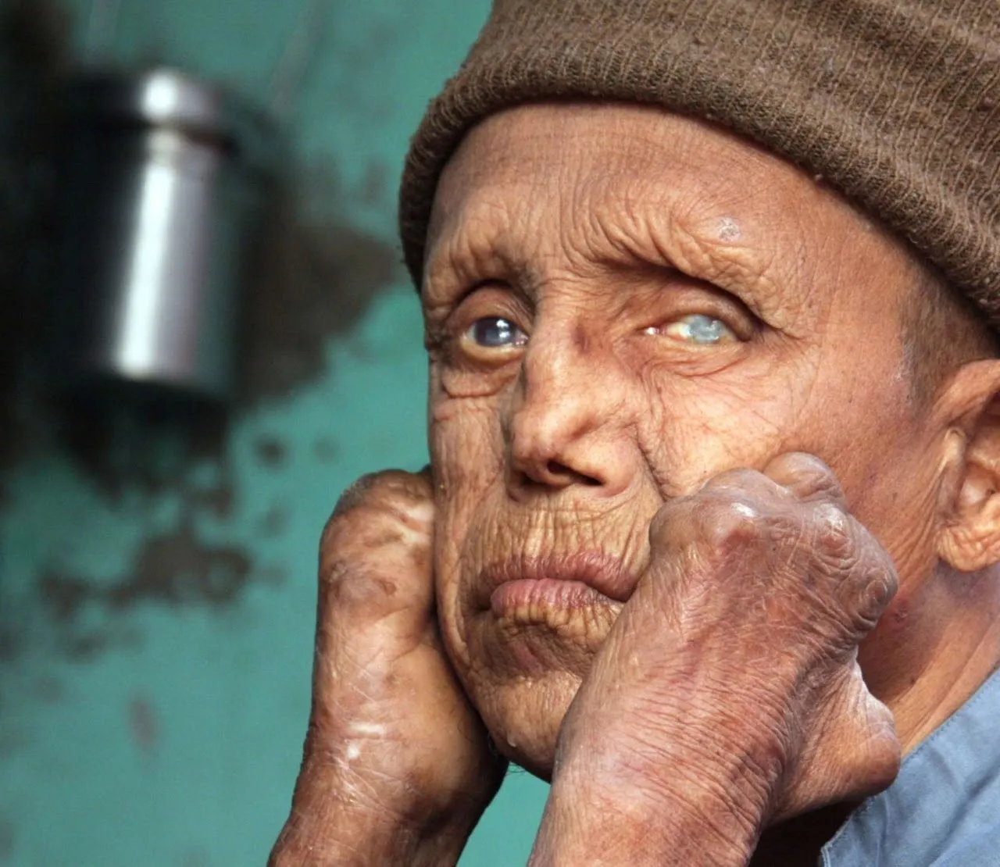
Ludzie zmagają się z takimi schorzeniami jak rak, trąd i inne poważne choroby, a także z depresją, lękiem i traumą, co prowadzi do długotrwałego bólu, izolacji i trwałego cierpienia psychicznego.
Nawet ten przegląd stanowi jedynie niewielką część całkowitego cierpienia istniejącego na świecie, a żadna ilość szczęścia nie może przeważyć nad faktem, że choćby jedna osoba jest zmuszona do cierpienia.